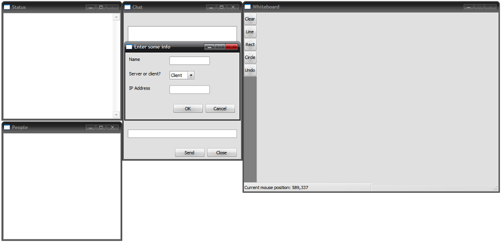
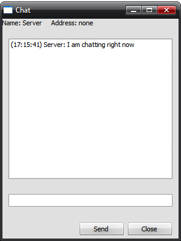
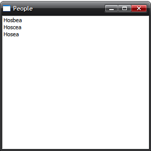
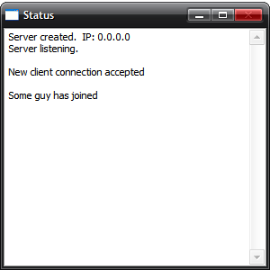
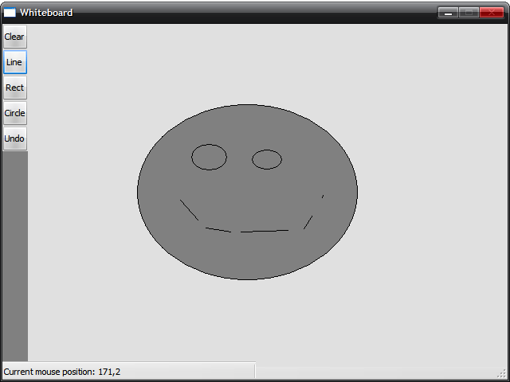

The GUI is relatively simple. A sample is shown:

This is the basic layout of the program's four basic windows on startup, not counting the dialog that appears. The four windows are as follows.

This is the chat box. It behaves similarly to the chat windows seen in various other chat clients. The user enteres the desired text into the small bar near the botton, and either presses the "Send" button, or presses the Enter key. The text is then displayed on the chat box along with a time stamp, and the person who typed the message. This is trasmittied between all connected clients.

This is the people window. Not very much to say about this window, all it does it display who is currently connected to the server (the server itself isn't shown).

Similar in appearence to the status window, but very different. The status window will display all the stuff that goes on behind the scenes, and then some. The messages differ slightly between the server and the client, however it performs the same basic function. It will notify the user in the event of a new connection, if a connection was terminated, who is joining the chat, etc.

Where the program gets its name, and what sets it appart from most IM applications. This is the whiteboard, the area where the server, or the leader of the IM session, draws whatever they please. It has 3 basic drawing tools; a line, a rectangle and a circle. The server may also clear the board, or undo shapes in the order they were added.